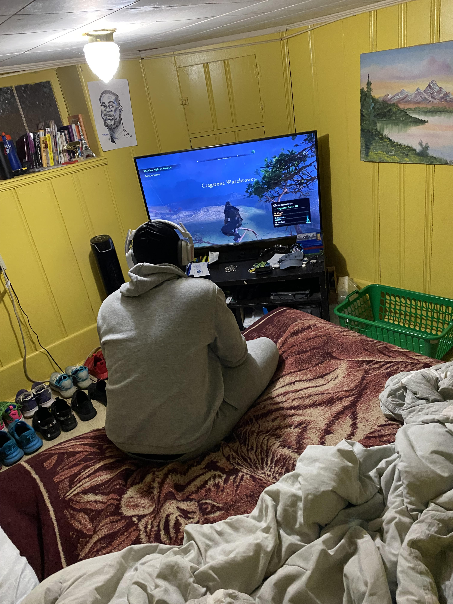

I can play video games for 24 hours
I like enjoying my relaxation time playing video games. I have always loved video games, but it is only two years ago that I really started playing a lot. I mostly play Action & Adventure game such as God of War, Assassin's Creed, or Ghost of Tsushima, but I also play sports game such as Madden or NBA2K. Of course, I cannot forget to mention Call of Duty
